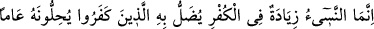
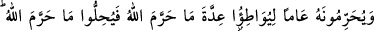
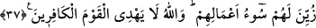

Burada Hak tâlibinin bütün günlerini ve ömrünü Hakk’ı talep yolunda sarfetmesi
gerektiğine işaret vardır. Ömrünün tamamını Hak yolunda sarfetmek mümkün olmazsa
üçte ikisini, bu da olmazsa yarısını sarfetmesi gerekir. Bu da mümkün olmazsa artık
ömrünün üçte birini Hakk’ı talep dışında sarfetmesi haramdır. Ömrünün üçte birinden
azını Hakk’ı talep yolunda sarfeden kimse iflah olmaz. Tâlibin ömrünün bir kısmını
kendisinin, ailesinin ve çocuklarının geçimini temin etmek için sarfetmesi gerekir. Hak
tâlibi bu mânîden (geçinme ve geçindirme mes’ûliyetinden) müstağnî ise ömrünün bir
ânını dahi Hakk’ı talep ve taleple ilgili hususlar dışında sarfetmesi ona haram olur.
Nitekim Allah Teâlâ: “İşte doğru din budur.” buyurmuştur. Yâni ömrünün bir kısmını
Hakk’ı taleb dışında sarfeden kimsenin dini düzgün değildir. Dininde, Hakk’ı taleb
dışında geçirdiği vaktin miktarı kadar eğrilik vardır. Bunu iyi anla!
Sonra Allah: “O aylar içinde” ömrün üçte birlik bölümünde “kendinize
zulmetmeyin” buyurmuştur. Çünkü dört, on ikinin üçte biridir. Yani, ömrünüzün haram
aylar mesâbesindeki üçte birlik bölümünden her hangi bir vakti dünyevî bir menfaat
elde etmek için sarfederseniz kendinize zulmetmiş sayılırsınız. Bu ise sıfatlarının
galebesi anında nefislerin kalpleri ve ruhları istilâ etmesi sebebiyle olur. Çünkü ömrün
çoğu, dünya ve menfaatleri uğrunda sarfedildikçe ve nefsânî hazların istîlası devam
ettikçe nefis, kalbe ve rûha galip hale gelir. Bütün kötü sıfatlarıyla kalp ve rûha
muhalefet eder, onlarla mücâdele eder. Dünyaya ve dünya şehvetlerine meyleder,
hevasına kulluk eder. Böylece Allah’a şirk koşan bir nefis halini alır. Bu yüzden Allah
Teâlâ: “Müşrikler” yâni nefisler ve onların sıfatları “nasıl sizinle topyekün
savaşıyorlarsa, siz de” yâni kalpleriniz ve sıfatları, ruhlarınız ve sıfatları “onlarla
topyekün savaşın.” buyurmuştur.
Nefislerle savaşmak onlara muhalefet etmek, onları hevâlarından men etmek,
sıfatlarını kırmak, şehvetlerinden men etmek, tâatler ve ibadetlerle meşgul etmek, rûhânî
ve kalbî muâmelelerde kullanmakla olur. Nefisle savaş, kısaca nefsi kötü vasıflardan
tezkiye (arındırma) ve güzel huylarla süslemek demektir.
Sonra Allah Teâlâ, “Bilin ki Allah, müttakîlerle beraberdir.” buyurmuştur. Buradaki
“müttakîler”den maksat, şirkten yani Allah’tan başkasına iltifattan korunan kalpler ve
ruhlardır. Şayet Allah, yardımıyla ve tevfîki ile onlarla beraber olmasaydı, kesinlikle
korunamazlardı. Onlar Allah’ın dışındakilerden ancak Allah sayesinde, O’nun
yardımıyla korunabilmişlerdir. et-Te’vîlâtü’n-Necmiyye’de böyle geçmektedir.